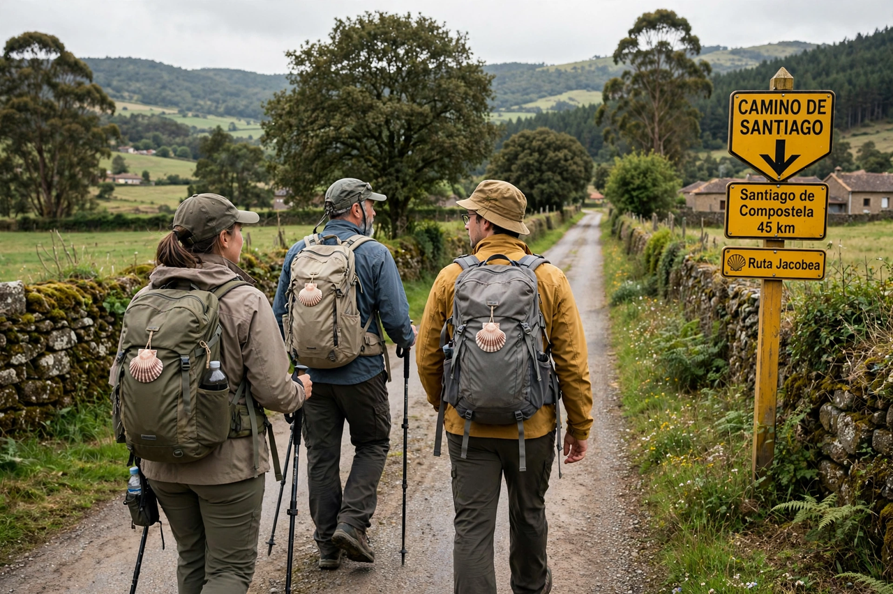

Camino de Santiago
From Wikipedia, the free encyclopedia

The Camino de Santiago (the Way of St James) is a large network of pilgrimage routes leading to the shrine of the apostle James the Great in the cathedral of Santiago de Compostela in Galicia, northwestern Spain, where tradition holds the apostle is buried. Pilgrims have walked it since the ninth century; today hundreds of thousands a year — many for sport, scenery or self-discovery as much as devotion — complete at least the last 100 km required for the Compostela certificate, carrying a pilgrim's passport (credencial) stamped along the way.
Routes and history
The busiest route, the Camino Francés, runs some 780 km from Saint-Jean-Pied-de-Port over the Pyrenees through Pamplona, Burgos and León; others include the Portugués, the Norte along the coast, the Primitivo from Oviedo and the Vía de la Plata from Seville. The medieval infrastructure — hospices, bridges (the order of Santiago and the Templars guarded the road), Romanesque churches and the twelfth-century Codex Calixtinus, the first pilgrim's guidebook — made it one of Christendom's three great pilgrimages, alongside Rome and Jerusalem.
Modern revival
After near-extinction, the Camino revived from the 1980s (a UNESCO World Heritage Site and the Council of Europe's first Cultural Route, 1987); albergue dormitories, yellow-arrow waymarking and the scallop-shell symbol define the experience. Completions (Compostelas issued) run to several hundred thousand in recent years, prompting debate about crowding, commercialisation and what pilgrimage means now.